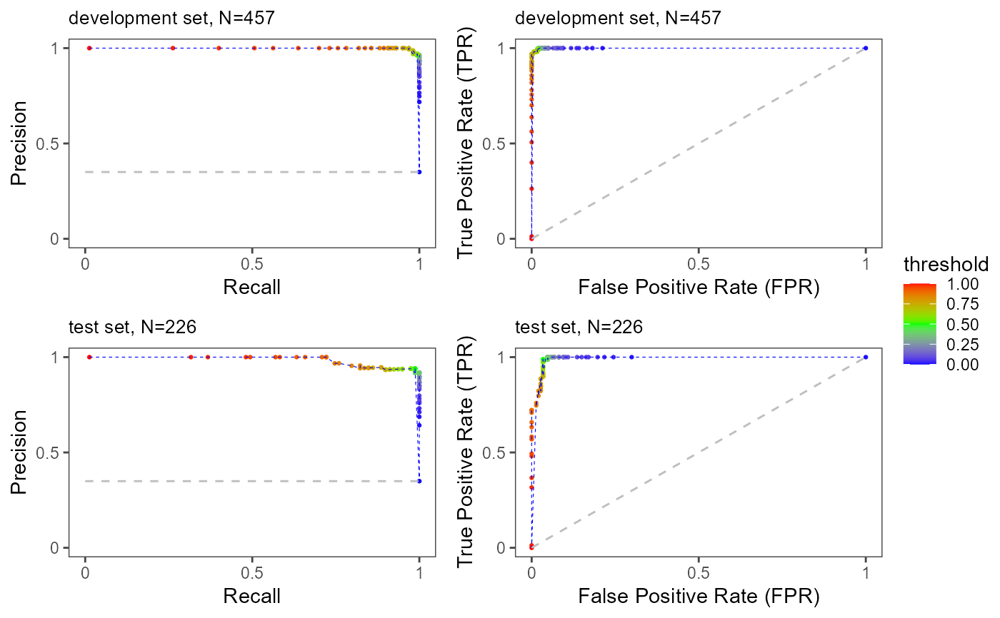

This function generates Precision-Recall and ROC curves, including threshold information for binary classification models.
Arguments
- task
mlr3 binary classification task object specifying the task details
- trained_model
mlr3 trained learner (model) object obtained after training
- splits
mlr3 object defining data splits for train and test sets
Examples
# Set environment variables for reproducibility
Sys.setenv(LANG = "en") # Change R language to English!
RNGkind("L'Ecuyer-CMRG") # Change to L'Ecuyer-CMRG instead of the default "Mersenne-Twister"
# Load required libraries
library("explainer")
# Set seed for reproducibility
seed <- 246
set.seed(seed)
# Load necessary packages
if (!requireNamespace("mlbench", quietly = TRUE)) stop("mlbench not installed.")
if (!requireNamespace("mlr3learners", quietly = TRUE)) stop("mlr3learners not installed.")
if (!requireNamespace("ranger", quietly = TRUE)) stop("ranger not installed.")
# Load BreastCancer dataset
utils::data("BreastCancer", package = "mlbench")
# Keep the target column as "Class"
target_col <- "Class"
# Change the positive class to "malignant"
positive_class <- "malignant"
# Keep only the predictor variables and outcome
mydata <- BreastCancer[, -1] # 1 is ID
# Remove rows with missing values
mydata <- na.omit(mydata)
# Create a vector of sex categories
sex <- sample(c("Male", "Female"), size = nrow(mydata), replace = TRUE)
# Create a vector of age categories
mydata$age <- as.numeric(sample(seq(18, 60), size = nrow(mydata), replace = TRUE))
# Add a sex column to the mydata data frame (for fairness analysis)
mydata$sex <- factor(sex, levels = c("Male", "Female"), labels = c(1, 0))
# Create a classification task
maintask <- mlr3::TaskClassif$new(
id = "my_classification_task",
backend = mydata,
target = target_col,
positive = positive_class
)
# Create a train-test split
set.seed(seed)
splits <- mlr3::partition(maintask)
# Add a learner (machine learning model base)
# Here we use random forest for example (you can use any other available model)
mylrn <- mlr3::lrn("classif.ranger", predict_type = "prob")
# Train the model
mylrn$train(maintask, splits$train)
# Make predictions on new data
mylrn$predict(maintask, splits$test)
#> <PredictionClassif> for 226 observations:
#> row_ids truth response prob.malignant prob.benign
#> 2 benign malignant 0.8358405 0.1641595238
#> 3 benign benign 0.0010000 0.9990000000
#> 4 benign malignant 0.8758770 0.1241230159
#> ---
#> 655 malignant malignant 0.9152730 0.0847269841
#> 665 malignant malignant 0.9993333 0.0006666667
#> 683 malignant malignant 0.9147024 0.0852976190
ePerformance(task = maintask, trained_model = mylrn, splits = splits)
#> [[1]]

#>
#> [[2]]
#>
#> [[3]]
#>